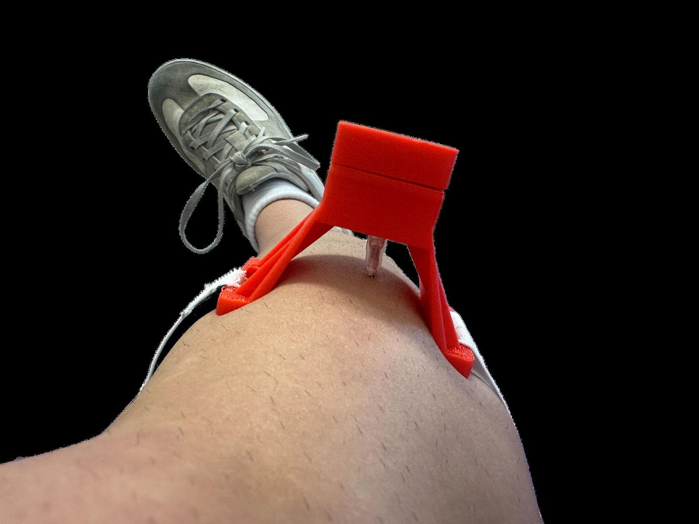
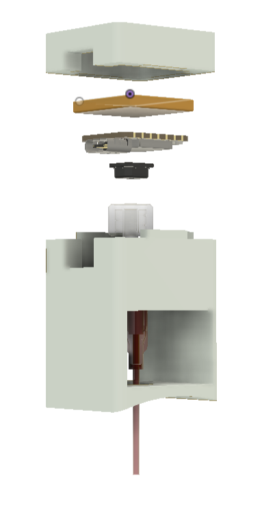
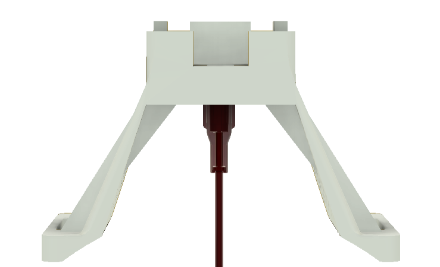
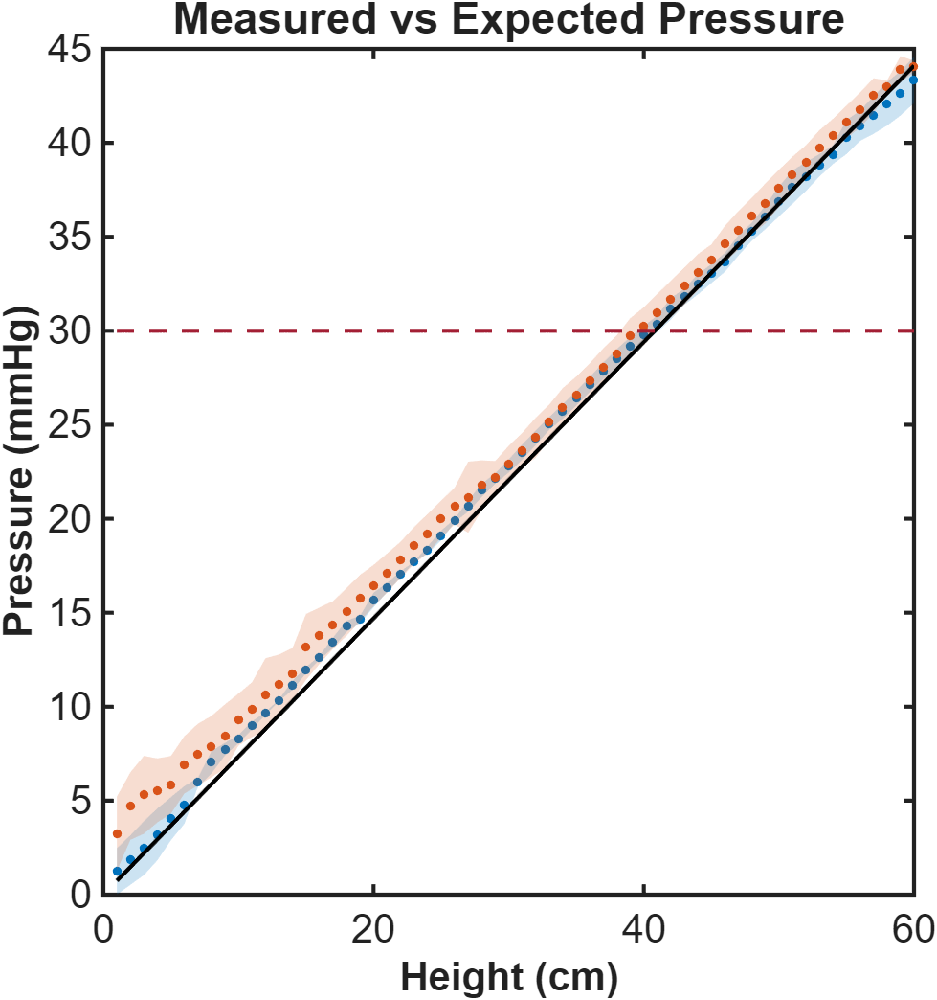
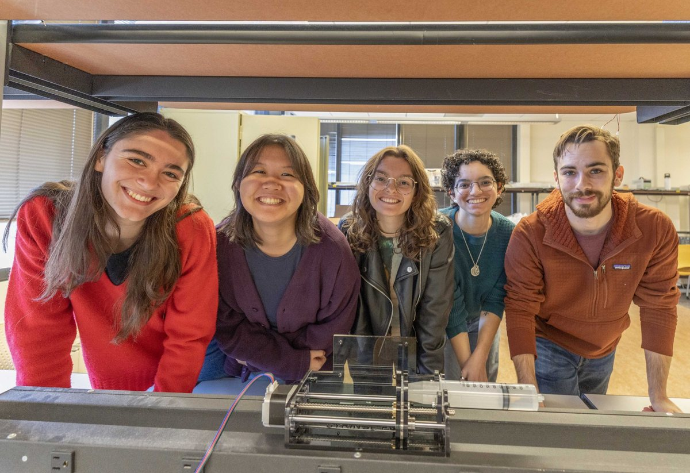

Compartment syndrome can take a limb in hours, and the standard of care still measures pressure one needle-stick at a time. In MIT's 2.750 (Medical Device Design), working with a clinical proposer from Massachusetts General Hospital, our team built a wearable patch that monitors intracompartmental pressure continuously — and validated it to within 1 mmHg at the diagnostic threshold.

Acute compartment syndrome follows fractures, burns, crush injuries — pressure rises inside a muscle compartment, choking off perfusion. Above ~30 mmHg, the treatment is an emergency fasciotomy; missed, the endpoint is tissue death and amputation. The catch: onset can be silent, especially under regional anesthesia, when pain — the most reliable clinical sign — is masked.
The dominant tool, the Stryker ICP monitor, costs ~$3,000, takes a single snapshot per needle insertion, and sounds no alarms. Our clinical proposer, Dr. Michael Fuenfer (MGH Pediatric Critical Care), asked for the missing device: cheap, continuous, and loud when it matters.
The answer is a wearable patch. An indwelling 20-gauge flexible catheter connects through a luer lock to a pressure transducer on the patch; an ESP32 samples it, median-filters the signal, and streams readings over Bluetooth Low Energy to a phone app that plots the trend and raises audible and visual alarms at a programmable threshold. A 110 mAh battery runs the system for ~20 hours of monitoring. The patch mounts with adhesive plus a velcro strap, with the housing curvature matched to the limb.


We validated accuracy against first principles: a hydrostatic water column, where pressure is known exactly from ρgh. Across the clinically relevant range, the device read within 1 mmHg at the 30 mmHg diagnostic level, with no systematic difference between needle and catheter delivery. To test in something closer to flesh, we built a phantom muscle compartment — ballistics gel over an inflatable inner pouch in a nylon sleeve — and tracked programmed pressure ramps through the full needle-to-app chain. Battery endurance testing closed the loop on the 20-hour monitoring claim.


The prototype meets its functional requirements on the bench. The path forward is animal and then clinical testing, head-to-head comparison against the Stryker and MY01 devices, and motion-artifact filtering for ambulatory patients. The project was a full medical-device cycle in one semester: clinical need → functional requirements → architecture → prototype → quantitative validation.